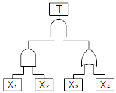
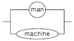
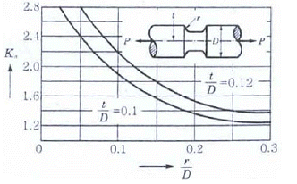
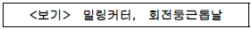
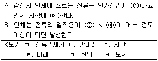
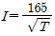

산업안전기사 (2005-09-04 기출문제)
1과목: 안전관리론
1. 기업 내 정형 교육 중 TWI(training within industry)의 교육 내용 중 부하 통솔 기법에 해당되는 것은?
- JIT(Job Instruction Training)
- JMT(Job Method Training)
- JRT(Job Relation Training)
- JST(Job Safety Training)
(정답률: 56%)

2. 근로자수 400명, 총근로시간수 48시간×50주이고 연재해건수는 210건(연근로 손실일수를 800으로 함)일 때 이 사업장의 강도율은?
- 0.38
- 0.42
- 0.64
- 0.83
(정답률: 60%)
3. 다음 사람들 중 재해코스트에 대한 이론(역설)과 관계가 없는 사람은?
- 시몬즈
- 버즈
- 웨버
- 콤페스
(정답률: 40%)
4. 보호구 검정 규정상 방진 마스크의 항목별 성능 기준에서 시야(각도)는?
- 하방 60도 이상
- 상방 60도 이상
- 좌우방 60도 이상
- 하방 30도 이상
(정답률: 39%)
5. 페일 세이프(fail safe)의 기능적 분류 중 고장 나면 바로 정지하도록 설계된 것은?
- 페일 패시브(fail passive)
- 페일 액티브(fail active)
- 페일 오퍼레이션(fail operation)
- 페일 소프트(fail soft)
(정답률: 64%)
6. 법령상 안전 관리자가 수행하여야 할 직무로 알맞은 것은?
- 사업장에 관한 통계의 기록 유지 및 분석처리에 관한사항
- 해당 작업에서 발생한 산업 재해에 관한 보고 및 응급구호 조치
- 작업 환경 측정 및 재해의 원인 조사 및 재발 방지대책
- 해당 사업장 안전 교육 계획의 수립 및 실시
(정답률: 54%)
7. 방독 마스크의 항목별 성능 기준에서 안면부의 흡기 저항이 격리식 및 직결식 전면형 유량 160ℓ/min인 방독 마스크의 경우 차압(Pa)은?
- 250 이하
- 200 이하
- 150 이하
- 130 이하
(정답률: 27%)
8. 다음 안전 관리 조직 중 line 형의 장점은?
- 안전에 관한 응급조치, 통제 수단이 복잡하다.
- 안전에 관한 기술 축적이 용이하다.
- 안전에 관한 지시나 조치가 철저하다.
- 경영자의 자문 역할을 한다.
(정답률: 64%)
9. 연평균 200명의 근로자가 작업하는 사업장에서 연간 3건의 재해가 발생하여 사망 1명. 나머지 1명은 20일간 요양하였다. 이 사업장의 강도율은? (단, 연간 근로일수는 300일, 1일 근로시간은 8시간이다.)
- 15.01
- 15.71
- 17.61
- 17.71
(정답률: 65%)
10. 반사광(glare)의 처리 방법이 아닌 것은?
- 광원의 반사광을 줄이고 수를 늘린다.
- 차양판을 사용하여 눈에 직접 오지 않도록 한다.
- 간접 조명을 사용하여 작업 장소의 조명을 통일한다.
- 반사광의 주위를 어둡게 하여 광속 발산비를 줄인다.
(정답률: 56%)
11. 사업장의 안전 교육 훈련 특징이 아닌 것은?
- 기업의 목적에 따라 계획하고 실시하는 것이다.
- 교육 훈련에 의해 기업 이익을 기대한다.
- 필요할 때 집중적으로 실시한다.
- 작업을 수행할 수 있는 것보다 이해하는데 중점을 둔다.
(정답률: 47%)
12. 라인식(직계식) 조직의 특성으로 옳지 않은 것은?
- 안전 관리 전담 요원을 별도로 지정한다.
- 모든 명령은 생산 계통을 따라 이루어진다.
- 규모가 작은 사업장에 적용된다.
- 참모식 조직보다 경제적인 조직이다
(정답률: 69%)
13. 안전보건에 관한 전문 지식이나 기술의 결여라는 단점이 있으나 안전 지시나 조치가 철저하여 소규모 사업장에적합한 안전 조직 형태는?
- 직계형(Line형)
- 참모형(staff형)
- line-staff 혼형
- 특수형
(정답률: 84%)
14. 다음은 인간 의식의 공통점을 설명한 것이다. 잘못 설명한 것은?
- 인간 의식은 파동을 이루고 있다.
- 인간 의식은 중단하는 경향이 있다.
- 의식에는 대응력(對應力의)의 한계가 있다.
- 의식은 그 초점에서 멀어질수록 맑아진다고 생각된다.
(정답률: 71%)
15. 다음 중 관료주의의 중요한 4가지 차원이 아닌 것은?
- 조직도에 나타난 조직의 크기와 넓이
- 관리자가 책임질 수 있는 근로자 수
- 관리자를 대단위로 묶어 분산
- 작업의 단순화와 전문화
(정답률: 49%)
16. 다음의 위험 분석 기법 가운데서 연역적 분석 방법을 사용한 것은?
- 시스템 위험 분석 (SHA)
- 고장 형태와 영향 분석 (FMEA)
- 결함 위험 분석 (FHA)
- 결함수 분석 (FTA)
(정답률: 51%)
17. 오·폐수 찌꺼기가 오래 쌓여 있는 침전조를 청소하려고 한다. 작업자들에게 준비해야 할 보호구가 아닌 것은?
- 고무장화
- 안전모
- 방진마스크
- 호스 마스크
(정답률: 64%)
18. 학습 방법 가운데 전습법의 장점에 해당 되지 않는 것은?
- 망각이 적다.
- 학습이 빠르다.
- 반복이 적다.
- 연합이 생긴다.
(정답률: 36%)
19. 조건반사설에 의한 학습이론의 원리가 아닌 것은?
- 준비성의 원리
- 일관성의 원리
- 계속성의 원리
- 강도의 원리
(정답률: 45%)
20. 다음 중 인간의 오류(human error)와 관련한 설명 중 틀린 것은?
- 인간이 오류를 범하여도 시스템이 안전하도록 설계하는 fail safe 개념을 도입하여 작업장을 설계한다.
- 인간이 오류를 범하여도 마치 그렇지 않게 설계하는 fool proof 개념을 도입하여 작업장을 설계한다.
- 오류를 범한 작업자는 다시 유사한 오류를 범할 가능성이 높으므로 작업에서 제거한다.
- 사전에 마련한 점검표(check list)를 사용하여 위험요인을 점검하고 제거시킨다.
(정답률: 71%)
2과목: 인간공학 및 시스템안전공학
21. 인간-기계 시스템의 인간 성능(human performance)을 평가하는 실험을 수행할 때 평가의 기준이 되는 변수는?
- 독립 변수
- 종속 변수
- 통제 변수
- 확률 변수
(정답률: 32%)
22. 현실적으로 시스템을 사용하는 때에는 정비나 보수가필수 불가결한 작업이다. 이러한 작업들로 인해 시스템의 신뢰도 함수가 가장 크게 영향을 받는 구조는?
- 대기 구조
- n중 k구조
- 병렬 구조
- 직렬 구조
(정답률: 58%)
23. 인간 기계 체계 중 기계가 스스로 연속적인 조종을 수행하는 체계는?
- 개회로 체계
- 폐회로 체계
- 수동 체계
- 기계화 체계
(정답률: 28%)
24. 인간의 과오를 정량적으로 평가하기 위한 기법으로서 인간의 과오율 추정법 등 5개의 스텝으로 되어 있는 기법은?
- THERP
- FTA
- FMEA
- ETA
(정답률: 57%)
25. 다음과 같은 결함수에서 기본 사상이 일어날 확률이 모두 0.1이다. 이 때 재해가 일어날 확률은?

- 0.0019
- 0.001
- 0.01
- 0.1
(정답률: 61%)
26. 페일세이프(fail safe)의 개념과 가장 관계가 깊은 것은?
- 안전사고를 예방할 수 없는 불안전한 조건과 상태
- 기계 장비의 성능이 생산에는 지장이 없으나 위험한 상태
- 인간 또는 기계가 동작상의 실패가 있어도 사고를 발생시키지 않도록 하는 통제
- 안전장치가 고장 나 있는 상태
(정답률: 71%)
27. 시스템 안전을 위한 잠재 위험 요소의 검출 방법으로 맞지 않는 것은?
- 위험 발생시 조치 checklist
- 방법상의 잠재 위험 제어 checklist
- 잠재 위험 최소화를 위한 설계 checklist
- 경보 장치와 방호 장치 checklist
(정답률: 53%)
28. 소리의 크고 작은 느낌은 주로 강도의 함수이지만 진동수에 의해서도 일부 영향을 받는다. 음량을 나타내는 척도인 phon의 기준 순음 주파수는?
- 1000Hz
- 2000Hz
- 3000Hz
- 4000Hz
(정답률: 59%)
29. 컴퓨터 입력 작업과 같은 상지중심 작업의 근골격계 질환 작업 유해 요인 분석 평가법으로 가장 적당한 것은?
- OWAS
- RULA
- NLE
- Snook table
(정답률: 34%)
30. 인간의 실수 원인 중 개인 특성에 해당되는 것이 아닌 것은?
- 심신기능
- 건강 상태
- 작업 부적성
- 교육 훈련
(정답률: 72%)
31. 대안의 발생 확률이 동일한 경우에 64가지 대안에 대하여 얻을 수 있는 정보량은 얼마인가?
- 64bit
- 16bit
- 5bit
- 6bit
(정답률: 41%)
32. 인간의 시야 범위에는 한계가 있다. 정상적 인간의 수평면 시야 범위는?
- 약 150°
- 약 280°
- 약 200°
- 약 250°
(정답률: 39%)
33. 다음 중 정보의 시각적 제시가 바람직한 경우는?
- 주위 환경이 소란할 때
- 정보가 간단하고 직선적일 때
- 정보가 즉각적인 행동을 요구할 때
- 정보를 받는 사람이 여러 곳으로 움직여야 할 때
(정답률: 58%)
34. 다음 그림과 같은 man-machine system에서의 신뢰도를 구하면 얼마인가? (단, man의 신뢰도는 0.70 이고machine 신뢰도는 0.90 이다.)

- 0.95
- 0.96
- 0.97
- 0.98
(정답률: 65%)
35. 인간 공학적 의자 설계의 원칙에 대한 설명 중 틀린 것은?
- 사람이 의자에 앉아 있을 때 체중이 주로 좌골결절에 실려 있어야 한다.
- 좌판 앞부분은 오름보다 높지 않아야 한다.
- 일반적으로 좌판의 깊이는 몸이 큰 사람을 기준으로 결정한다.
- 의자에 앉아 있을 때 몸통에 안정을 주어야 한다.
(정답률: 46%)
36. 입식 작업을 할 때 중량물을 취급하는 중(重)작업의 경우 적절한 작업대의 높이는?
- 팔꿈치 높이보다 10~20cm 높게 설계한다.
- 팔꿈치 높이에 맞추어 설계한다.
- 팔꿈치 높이보다 5~10cm 낮게 설계한다.
- 팔꿈치 높이보다 10~20cm 낮게 설계한다.
(정답률: 45%)
37. 시스템 용어에서 자체적으로 하나의 시스템을 구성할수 있는 시스템의 구성 요소를 무엇이라 하는가?
- 시스템(system)
- 하부 시스템(sub system)
- 시스템 안전(system safety)
- 인간 공학(human factor)
(정답률: 43%)
38. 인간의 손이나 말을 이동시켜 조작 장치를 조작하는데 걸리는 시간을 표적까지의 거리와 표적 크기의 함수로 나타내는 모형은?
- 힉(Hick)의 법칙
- 피츠(Fitts)의 법칙
- 웨버(Weber)의 법칙
- 신호 탐지 이론(SDT)
(정답률: 50%)
39. 사고의 요인 중 기계 시스템(System)의 결격 사항이 아닌 것은?
- 성능 저하의 결격
- 작동상의 결격
- 설계상의 결격
- 착시상의 결격
(정답률: 65%)
40. 다음 중 신뢰성 설계 기술이 아닌 것은?
- 신뢰성 추출(Sampling)
- 중복(Redundancy)의 결격
- 부품의 단순화와 표준화
- 인간 공학적 설계와 보전성 설계
(정답률: 23%)
3과목: 기계위험방지기술
41. 밀링머신 작업의 안전 작업 방법에 해당하지 않는 것은?
- 강력 절삭을 할 때는 일감을 바이스로부터 길게 물린다.
- 일감을 측정할 때에는 반드시 정지시킨 다음에 한다.
- 상하 이송 장치의 핸들은 사용 후 반드시 빼두어야 한다.
- 칩의 제거는 반드시 기계 정지 후 브러시를 사용한다.
(정답률: 72%)
42. 직경 510mm의 목재 가공용 둥근 톱에서 반발을 일으키는 부분과 반발 방지 방호 장치 종류 및 설치조건이 바르게 연결된 것은?
- 뒷날 - 낫형분할날 - 톱날과의 간격 12mm 이내
- 뒷날 - 현수형분할날 - 톱날후면부 1/3 이상 방호
- 앞날 - 낫형분할날 - 분할날 두께는 톱날 두께 1.5배이상
- 앞날 - 반발방지발톱 - 가공면과 간격 18mm 이내
(정답률: 39%)
43. 플레이너의 안전 작업을 위한 절삭 행정속도는 얼마인가? (단, 1분간의 테이블 왕복수 10회, 행정 길이 2m, 귀환행정 속도는 절삭행정 속도의 2배)
- 20m/min
- 20m/sec
- 30m/min
- 30m/sec
(정답률: 32%)
44. 컨베이어에 작업하는 근로자의 신체 일부가 말려들 위험이 있을 때에 설치하여야 할 안전장치는?
- 헤드가드
- 비상 정지 장치
- 이탈을 방지하는 장치
- 역주행을 방지하는 장치
(정답률: 71%)
45. 침투탐상 시험법의 시험 순서로 적합한 것은?
- 전처리 - 침투처리 - 세척처리 - 유화처리
- 전처리 - 침투처리 - 현상처리 - 후처리
- 전처리 - 세척처리 - 침투처리 - 후처리
- 전처리 - 후처리 - 침투처리 - 세척처리
(정답률: 40%)
46. 회전수가 200rpm으로 80마력을 전달하는 동력축의 지름은 얼마인가? (단, 재료의 인장 강도는 3,000kg/cm2로 하고, 비틀림 강도는 인장 강도의 60%이며, 안전율 S=8이다.)
- 6.83cm
- 7.49cm
- 8.66cm
- 9.45cm
(정답률: 37%)
47. 그림과 같은 D=40mm, r=6mm, t=4mm인 축이3,000kg의 인장하중을 받는다. 축재료의 인장 강도가 55kg/mm2일 때 안전율은 얼마인가?

- 10.5
- 13.1
- 14.4
- 15.7
(정답률: 36%)
48. 인장 강도가 35kg/mm2인 강판의 안전율이 4라면 허용 능력은?
- 7.64
- 8.75
- 9.84
- 10.23
(정답률: 63%)
49. 다음 보기와 같은 기계요소에 존재하는 위험점은?

- 협착점
- 끼임점
- 절단점
- 물림점
(정답률: 60%)
50. 다음 작업 중에서 장갑을 끼고 작업을 해도 좋은 작업은?
- 드릴 작업
- 선반 작업
- 용접 작업
- 밀링 작업
(정답률: 74%)
51. 다음 프레스 중 광선식 안전장치를 사용할 수 없는 것은?
- 마찰프레스
- positive clutch 부착의 crank press
- 액압프레스
- crankless press
(정답률: 32%)
52. 다음은 설비의 이상시 전형적인 검출 방법을 연결한 것중 틀린 것은?
- 풀림 : 소프법, 페로그래픽
- 부식 : 전기저항, 초음파
- 이상 온도 : 열전대, 서머크레이온
- 이상 진동 : 진동픽업
(정답률: 42%)
53. 지게차의 안정도에 대한 내용 중 잘못된 것은?(오류 신고가 접수된 문제입니다. 반드시 정답과 해설을 확인하시기 바랍니다.)
- 하역 작업시 전·후 안정도 10%
- 주행시의 전·후 안정도 18%
- 하역 작업시 좌·우 안정도 6%
- 주행시의 좌·우 안정도 (1.5+1.1V)%, 이때 V=최고 속도(km/h)
(정답률: 49%)
54. 프레스의 금형 앞쪽(위험점)으로부터 20cm 떨어진 위치에 광전자식 안전장치를 부착하고자 한다. 급정지에 소요되는 시간 중 전기적 지동 시간이 25ms라고 할 때 기계적 지동 시간의 범위는?
- 0.1초 이하
- 0.125초 이하
- 12.5ms 이하
- 0.1225초 이하
(정답률: 28%)
55. 다음 은 압력 용기의 자체 검사 사용에 관한 사항 중 해당되지 않는 것은?(관련 규정 개전전 문제로 기존정답은 2번입니다. 여기서는 2번을 누르면 정답 처리 됩니다. 자세한 내용은 해설을 참고하세요.)
- 압력 용기 본체의 상태
- 압력 방출 장치의 토출 상태
- 드레인 밸브의 조작과 배수 상태
- 그 밖의 부속장치의 부식 및 균열 등 이상 유무
(정답률: 64%)
56. 기계 구조 부분의 강도적 안전화를 위한 안전 조건에 해당되지 않는 것은?
- 재료 선택시의 안전화
- 설계시의 올바른 강도 계산
- 사용상의 안전화
- 가공상의 안전화
(정답률: 47%)
57. 산업용 로봇의 작동 범위 내에서 교시 등의 작업을 하는 때에는 작업 시작 전에 어떤 사항을 점검하는가?
- 언로드 밸브의 기능
- 자동제어장치(압력제한 스위치 등) 기능의 이상 유무
- 제동장치 및 비상정지장치의 기능
- 권과방지장치의 이상 유무
(정답률: 54%)
58. 기계 설비의 방호 장치 선정시 고려하여야 할 사항에 해당하지 않는 것은?
- 신뢰성
- 작업성
- 보수성의 난이
- 생산성
(정답률: 41%)
59. 100ton 이하의 프레스기에서 고장이 발생하면 재해와 직결되는 부분 중 가장 위험한 것은?
- 메탈 부분
- 로드 부분
- 슬라이드 부분
- 클러치 부분
(정답률: 42%)
60. 어떤 나사의 호칭이 M60이다. 이는 어떠한 나사를 말하는가?
- 수나사의 안지름이 60in
- 수나사의 바깥지름이 60in
- 수나사의 안지름이 60mm
- 수나사의 바깥지름이 60mm
(정답률: 47%)
4과목: 전기위험방지기술
61. 피뢰기의 접지 저항은 몇 Ω이하면 되는가?
- 10Ω 이하
- 100Ω 이하
- 106 Ω 이하
- 1kΩ 이하
(정답률: 68%)
62. 대전의 완화를 나타내는 중요한 인자인 시정수(time constant)는 최초의 전하가 몇 %까지 완화할 때까지의 시간을 말하는가?
- 20%
- 37%
- 45%
- 50%
(정답률: 49%)
63. 근로자가 고압의 충전 전로에 접근하여 작업할 때 감전의 위험으로 인한 휴전 조치를 해야 하는 신체와의 수평 거리고 짝지어진 것은?
- 충전 전로와 머리와의 거리 10cm이내, 신체와의수평 거리 40cm이내 일 때
- 충전 전로와 머리와의 거리 20cm이내, 신체와의수평 거리 50cm이내일 때
- 충전 전로와 머리와의 거리 30cm이내, 신체와의수평 거리 60cm이내일 때
- 충전 전로와 머리와의 거리 40cm이내. 신체와의수평 거리 70cm이내일 때
(정답률: 57%)
64. 다음 내용에 알맞은 단어(낱말)를 삽입하여 내용을 보기를 참고하여 완성한 것 중 옳은 것은?

- ① - ㄹ ② - ㄴ ③ - ㄱ ④ - ㄷ
- ① - ㄹ ② - ㄴ ③ - ㅁ ④ - ㄷ
- ① - ㄴ ② - ㄹ ③ - ㅁ ④ - ㄷ
- ① - ㄴ ② - ㄹ ③ - ㄱ ④ - ㄷ
(정답률: 65%)
65. 보통 인체의 전기 저항 중 피부 저항은 약 몇 Ω 인가?
- 300Ω
- 700Ω
- 1500Ω
- 2500Ω
(정답률: 33%)
66. 내압 방폭구조에서 안전전극(safe gap)을 적게 하는 이유는?
- 최소 점화 에너지를 높게 하기 위하여
- 폭발 화염이 외부에 유출되지 않도록 하기 위해
- 폭발 압력에 견디고 파손되지 않도록 하기 위해
- 쥐가 침입해서 전선 등을 갉아먹지 않도록 하기 위해
(정답률: 59%)
67. 다음은 정전기에 관련한 설명이다. 잘못된 것은?
- 정전유도에 의한 힘은 반발력이다.
- 발생한 정전기와 완화한 정전기의 차가 마찰을 받은 물체에 축적되는 현상을 대전이라 한다.
- 같은 부호의 전하는 반발력이 작용한다.
- 겨울철에 나일론제 셔츠 등을 벗을 때 경험한 부착 현상이나 스파크 발생은 박리 대전 현상 이 다 .
(정답률: 53%)
68. 공장의 제어 회로에 흐르는 전류를 20mA 이하로 제한하여 주위에 폭발성 가스가 존재하더라도 지락이나 단락, 단선 등으로 인하여 폭발이 발생되지 않는 방폭구조는?
- 본질안전방폭구조
- 안전증방폭구조
- 유입방폭구조
- 압력방폭구조
(정답률: 47%)
69. 과전류에 의한 전선의 발화 단계에 맞지 않는 것은?(단, 전류밀도 A/mm2)
- 완화 단계 40~43
- 착화 단계 43~60
- 발화 단계 60~150
- 용단 단계 120 이상
(정답률: 60%)
70. 전기가 대전된 물체를 제전시키려고 한다. 다음 중 대전물체의 절연 저항이 증가되어 제전에 효과가 감소되는 것은?
- 접지한다.
- 건조시킨다.
- 가습한다.
- 제전기를 설치한다.
(정답률: 48%)
71. 전기 발생에 영향을 주는 요인과 관계가 적은 것은?
- 물체의 표면 상태
- 접촉 면적 및 압력
- 분리 속도
- 물의 음이온
(정답률: 59%)
72. 접지 용구의 설치 및 철거에 대한 설명 중 잘못된 것은?
- 접지 용구 설치 전에 개폐기의 개방 확인 및 검전기 등으로 충전 여부 확인
- 접지 설치 요령은 먼저 접지측 금구에 접지선을 접속하고 금구를 기기나 전선에 확실히 부착한다.
- 접지 용구 취급은 작업 책임자의 책임하에 행하여야 한다.
- 접지 용구의 철거는 설치 순서에 따른다.
(정답률: 48%)
73. 작업장 내 전기 사용 장소에서 단락으로 인한 심한 아크가 동반되어 화재를 유발하거나 화상 및 감전 재해를 일으키기도 하는데 이와 같은 단락현상이 발생될 수 있는 요인이 되지 않은 것은?
- 절연 전선이나 캡타이어 케이블 등 절연 피복 손상에 의한 것
- 개폐기의 퓨즈 교환 중에 드라이버 끝으로 단자 간을 단락시킬 경우
- 전동기에서 과부하 또는 3상에서 3개의 전선 중 1개가 단락된 상태로 운전함에 따라 과전류가 흘러 소손되는 경우
- 전기기기의 가까운 곳에 과전류 차단기 등을 설치 사용할 경우
(정답률: 66%)
74. 반도체 취급시에 정전기로 인한 재해방지 대책으로써 옳지 않은 방법은?
- 송풍형 제전기 설치
- 반도체의 접지 실시
- 작업자의 대전방지 작업복 착용
- 작업대에 정전기 매트 사용
(정답률: 44%)
75. 60Hz 교류에서 통전전류의 크기가 인체에 주는 영향을 설명하였다. 가장 올바른 것은?
- 근육이 수축 현상을 일으키고 신경이 마비되어 신체를 자유로이 움직일 수 없는 상태를 고통 한계 전류라고 한다.
- 165/√T[mA]를 심실세동 전류라고 하며, 심장박동이 정지되는 현상을 말한다.
- 건강한 성인 남자는 0.5mA에서 전류치를 고통없이 짜릿하게 감지한다고 하여 최소감지전류라고 한다.
- 고통을 참을 수 있는 한계치 전류 7~8mA를 이탈전류 또는 가수전류라고 한다.
(정답률: 43%)
76. 접지의 목적이 아닌 것은?
- 낙뢰에 의한 피해 방지
- 송배전선, 고전압 모선 등에서 지락 사고의 발생시 보호계전기를 신속하게 동작시킴
- 설비의 전연물이 손상되었을 때 흐르는 누설 전류에 의한 감전 방지
- 송배 전선로의 지락 사고시 대지전위의 상승을 억제 하고 절연 강도를 상승시킴
(정답률: 42%)
77. 교류 아크 용접기 작업시에 안전장치인 자동전격방지기를 설치하였다. 이때 발생되는 사항에 해당하지 않는 것은?
- 역률이 좋아질 수 있다.
- 감전 사고를 방지할 수 있다.
- 용접선의 수명 증가와 효율이 높아질 수 있다.
- 전기 에너지가 절약되어 전기료를 절감할 수 있다.
(정답률: 33%)
78. 접지 전극을 지면으로부터 75cm 이상 깊은 곳에 매설하는 이유는?
- 전극의 부식을 방지하기 위하여
- 접지선의 단선을 방지하기 위하여
- 접촉 전압을 감소시키기 위하여
- 접지 저항을 감소시키기 위하여
(정답률: 42%)
79. 심실세동 전류를

mA 라면 감전되었을 경우 심실세동시에 인체에 직접 받는 전기 에너지[cal]는? (단, T는 시간(단위:초)이며, 인체의 저항성은 500Ω이다.)- 0.52
- 1.35
- 2.14
- 3.26
(정답률: 40%)
80. 교류아크 용접기의 전격방지기의 지동시간(Magnet 식)과 전압[V]을 바르게 표현한 것은?
- 1±0.3초 이내, 25V
- 0.06초 이내, 25V
- 2±0.3초 이내, 25V
- 1.5±0.06초 이내, 25V
(정답률: 56%)
5과목: 화학설비위험방지기술
81. 수소의 취성에 관한 사항으로 옳은 것은?
- 수소가 고온·고압에서 강중의 철과 반응하는 현상
- 수소가 고온·고압에서 강중의 탄소와 반응하여 메탄을 생성한다.
- 수소가 고온·저압에서 강중의 철과 반응하는 현상
- 수소가 고온·저압에서 강중의 탄소와 반응하여 메탄을 형성한다.
(정답률: 47%)
82. 산업안전보건법에 의한 위험 물질 분류와 해당 위험 물질이 바르게 짝지어 진 것은?
- 부식성 물질 - 과산화수소
- 산화성 액체 및 산화성 고체 - 93% 농도의 황산
- 가연성 가스 - 암모니아
- 물반응성 및 인화성 고체 - 칼륨
(정답률: 59%)
83. 화학 설비 내부의 가연성 가스 및 분진의 폭발을 방지하는 방법으로서 설비 내부의 산소 농도를 한계 농도 이하로 만들 때 사용되는 가장 좋은 방법은?
- 통풍구를 열어 환기시킨다.
- 불활성 가스를 투입하여 희석시킨다.
- 압축기로 밀어낸다.
- 진공 펌프로 뽑아낸다.
(정답률: 55%)
84. 열교환 탱크 외부를 두께 0.2m의 석면(k=0.037kcal/mhr℃)으로 보온하였더니 석면의 내면은 40℃, 외면은 20℃이었다. 면적 1m2 당 1시간에 손실되는 열량[kcal]은?
- 0.0037
- 0.037
- 1.37
- 3.7
(정답률: 22%)
85. 다음은 물질의 화학적인 위험성에 관한 것이다. 그 성격이 나머지 셋과 다른 것은?
- 중합반응
- 자동 산화에 이해 과산화물을 만들기 쉬운 반응
- 산화 반응
- 발화 반응
(정답률: 30%)
86. 아세틸렌 용접 장치에 설치해야 할 안전장치와 설치 요령에 맞지 않는 것은?
- 안전기를 취관마다 설치
- 주관에 안전기 하나, 취관 근접위치에 안전기 하나씩 설치
- 발생기와 분리된 용접 장치에는 가스 저장소와의 사이에 안전기 설치
- 주관에만 안전기 하나를 설치
(정답률: 68%)
87. 만성 중독의 판정에 사용되는 지수가 아닌 것은?
- TLV
- VHI
- 중독 지수
- MLD
(정답률: 40%)
88. 25℃ 액화프로판가스 용기에 10kg의 LPG가 들어 있다. 용기가 파열되어 대기압으로 되었다고 한다. 파열되는 순간 증발되는 프로판의 질량은? (단, LPG의 비열은 2.4kJ/kg이고, 표준비점은 -42.2℃, 증발잠열은 384.2kJ/kg이라고 한다.)
- 0.41kg
- 0.52kg
- 4.20kg
- 7.62kg
(정답률: 45%)
89. 다음 안전장치 중 인화성 물질 저장탱크 내의 내압 상승과 대기압과의 차이가 발생되는 경우 작동되는 안전 설비는?
- 통기밸브
- 체크밸브
- 파열판
- 안전밸브
(정답률: 26%)
90. 분진 폭발을 방지하기 위하여 첨가하는 불활성 분진 폭발 첨가물이 아닌 것은?
- 탄산칼슘
- 모래
- 석분
- 마그네슘
(정답률: 63%)
91. 저장 탱크에 액체 인화성 물질이 인입될 때의 유체의 속도는 API 기준으로 몇 m/s 이하로 하여야 하는가?
- 1m/s
- 4m/s
- 8m/s
- 9m/s
(정답률: 54%)
92. 인화성 고압가스 충전 장소에서 화재를 방지하기 위한 설비는?
- 냉각수 펌프
- 경보 장치
- 소화 설비
- 살수 장치
(정답률: 27%)
93. 인화점에 관한 설명에서 틀린 것은?
- 인화성 액체의 액면 가까이에서 인화하는데 충분한 농도의 증기를 발산하는 최저온도이다.
- 액체를 가열할 때 액면 부근의 증기 농도가 폭발 하한에 도달하였을 때의 온도이다.
- 밀폐 용기에 인화성 액체가 저장되어 있는 경우에 용기의 온도가 낮아 액체의 인화점 이하가 되어도 용기 내부의 혼합가스는 인화의 위험이 있다.
- 용기 온도가 상승하여 내부의 혼합 가스가 폭발 상한계를 초과한 경우에는 누설되는 혼합가스는 인화되어 연소하나 연소파가 용기 내로 들어가 가스 폭발을 일으키지 않는다.
(정답률: 31%)
94. 화학 설비 또는 그 부속 설비의 개조, 수리 및 청소 등을 위하여 해당 설비를 분해하거나 설비 내부에서 작업할때 준수하여야 할 사항에서 관계가 먼 것은?
- 작업 책임자를 정하여 해당 작업을 지휘하도록 할 것
- 작업 방법 및 순서를 정하여 미리 관계근로자에게 주지 시킬 것
- 작업 책임자를 반드시 관리감독자로 지정하고 그 작업을 지휘하도록 할 것
- 작업장 및 그 주변의 인화성 물질의 증기 또는 가연성가스의 농도를 수시로 측정할 것
(정답률: 58%)
95. 위험성 물질에 대한 다음의 설명 중 틀린 것은?
- 폭발성 물질 및 유기과산화물은 인화성 물질인 동시에 산소 공급 물질로서 폭발하기 쉬우며 가열, 마찰에 의해 심한 폭발을 일으킨다.
- 자연발화성 물질은 외부 착화원에 의해 발열하고 그열이 축적되어 발화가 된다.
- 물반응성 물질은 습기를 흡수하거나 수분에 접촉 될 때 에 발화 또는 발열의 위험이 있다.
- 혼합 위험성 물질은 두 종류 이상의 물질이 혼합 또는 접촉 시 발화의 위험이 있다.
(정답률: 60%)
96. 다음 중 비중격 천공증을 일으키는 물질은?
- Cd화합물
- Cr화합물
- Hg화합물
- Pb화합물
(정답률: 28%)
97. 다음 중 안전성 평가에서 사업주의 의무사항과 관계가 먼 것은?
- 유해·위험 설비의 안전성 평가
- 안전 보고서 작성
- 기술적 지침 마련
- 사고 조사보고서 작성
(정답률: 47%)
98. 다음 중 분진 폭발 시험 장치로 널리 사용되고 있는 방식은?
- 클리브랜드(Cleveland)
- 오하이오(Ohio)식
- 하트만(Heartmann)식
- PSA방식
(정답률: 49%)
99. 자연 발화의 방지법에 관계가 없은 것은?
- 점화원을 제거한다.
- 저장소 등의 주위 온도를 낮게 한다.
- 습기가 많은 곳에는 저장하지 않는다.
- 통풍이나 저장법을 고려하여 열의 축적을 방지한다.
(정답률: 48%)
100. 방폭 구조체에 반드시 설치해야 할 것은?
- 물의 순환 통로를 설치
- 접지 단자를 설치
- 기름의 순환 통로를 설치
- 공기의 순환 통로를 설치
(정답률: 45%)
6과목: 건설안전기술
101. 옹벽 구조물의 외부 안정 조건이 아닌 것은?
- 활동에 대한 안전
- 전도에 대한 안정
- 지반지지력에 대한 안정
- 강도에 대한 안정
(정답률: 27%)
102. 위험이 발생할 수 있는 장소에서 헤드가드를 갖추어야 하는 장비가 아닌 것은?
- 불도저
- 쇼벨
- 트랙터
- 리프트
(정답률: 60%)
103. 공사용 가설 도로에 대한 설명 중 옳지 않은 것은?
- 도로는 장비 및 차량이 안전하게 운행할 수 있도록 견고하게 설치한다.
- 부득이한 경우를 제외하는 경우 최고 허용 경사도는 20% 이다.
- 도로와 작업장의 접해 있을 경우에는 방책 등을 설치한다.
- 도로는 배수를 위해 경사지게 설치하거나 배수 시설을 해야 한다.
(정답률: 59%)
104. 일반적인 콘크리트의 압축 강도는 표준 양생을 실시한 재령 며칠을 기준으로 하는가?
- 7일
- 21일
- 28일
- 30일
(정답률: 38%)
1⑤. 철골 조립 작업에서 안전한 작업 발판과 안전 난간을 설치하기가 곤란한 경우 작업원에 대한 안전 대책으로 가장 알맞은 것은?
- 안전대 및 지지 로프 사용
- 안전모 및 안전화 사용
- 출입 금지 조치
- 작업 중지 조치
(정답률: 68%)
106. 법면 붕괴에 의한 재해 예방 조치로서 맞는 것은?
- 지표수와 지하수의 침투를 방지한다.
- 법면의 경사 및 구배를 증가시킨다.
- 절토 및 성토 높이를 증가시킨다.
- 토질의 상태에 관계없이 구배 조건을 일정하게 한다.
(정답률: 48%)
107. 암반을 천공하고 화약을 충진하여 발파한 후 스틸리브(steel rib)및 와이어매쉬(wire mesh)를 설치하고 숏크리트(shot crete) 를 타설하여 시공하는 터널 공법은?
- NATM 공법
- TBM 공법
- 개착식 공법(open cut)
- 실드 공법
(정답률: 31%)
108. 터널 공사 시 인화성 가스가 농도 이상으로 상승하는것을 조기에 파악하기 위하여 자동경보 장치를 설치해야 하는데 작업시작 전에 점검해야 할 사항이 아닌 것은?
- 계기의 이상 유무
- 발열여부
- 검지부의 이상 유무
- 경보 장치 작동 상태
(정답률: 58%)
109. 양중기(리프트, 승강기 및 차량 정비용 간이리프트 제외)의 자체 검사 주기에 대한 기준으로 알맞은 것은?
- 3월에 1회 이상
- 6월에 1회 이상
- 9월에 1회 이상
- 1년에 1회 이상
(정답률: 50%)
110. 가설 통로의 설치에 대한 설명으로 옳지 않는 것은?
- 일반적으로 경사는 30° 이하로 한다.
- 건설 공사에 사용하는 높이 8m 이상의 비계다리에는 7m 이내마다 계단참을 설치하여야 한다.
- 작업상 부득이한 때에는 필요한 부분에 한하여 안전난간을 임시로 해체할 수 있다.
- 수직갱에 가설된 통로의 길이가 10m 이상인 때에는 5m 이내마다 계단참을 설치하여야 한다.
(정답률: 32%)
111. 낙하 재해 예방을 위한 안전 조치 사항으로 부적절한 것은?
- 낙하물 방지망, 방호 선반 등을 설치한다.
- 출입금지 구역의 설정, 보호구의 착용 등의 조치를 취한다.
- 낙하물 방지망은 10m 이내마다 설치하고 각도는 수평면과 45° 각도를 유지한다.
- 낙하물 방지망 내민 길이는 벽면으로부터 2m 이상 으로 설치한다.
(정답률: 63%)
112. 롤러의 표면에 돌기를 만들어 부착한 것으로 풍화암을 파쇄하고 흙 속의 간극 수압을 제거하는 작업에 적합한 롤러는?
- Tandem roller
- Macadam roller
- Tamping roller
- Tire roller
(정답률: 60%)
113. 로프 길이 2m의 안전대를 착용한 근로자가 부상당하지 않을 지면으로부터 안전대 고정점까지의 최소의 높이로 알맞은 것은? (단, 로프의 신율 30%, 근로자의 신장 180cm)
- 1.5m
- 2.5m
- 3.5m
- 4.5m
(정답률: 33%)
114. 다음 중 차량계 건설 기계에 속하지 않는 것은?
- 불도저
- 스크레이퍼
- 항타기
- 타워크레인
(정답률: 49%)
115. 강관비계 중 단관비계의 수직 방향의 조립 간격 기준으로 옳은 것은?
- 3m
- 4m
- 5m
- 6m
(정답률: 59%)
116. 거푸집 동바리 조립 작업 기준으로 틀린 것은?
- 조립도를 작성하고 조립도에 따라 조립한다.
- 동바리로 파이프서포트(pipe support)를 사용하는 경우 높이가 3.5m를 초과 할 때에는 높이 2m 이내 마다 수평연결재를 2개 방향으로 설치한다.
- 강재와 강재와의 접속부 및 교차부는 철선 등으로 튼튼히 결속한다.
- 상ㆍ하단을 고정하고 동바리 하부에는 침하 방지 조치를 한다.
(정답률: 44%)
117. 항타기?항발기에서 사용하는 권상용 와이어로프 안전계수의 기준으로 옳은 것은?
- 5 이상
- 7 이상
- 10 이상
- 15 이상
(정답률: 41%)
118. 차량계 하역 운반 기계의 운전자가 취해야 할 행동으로 옳은 것은?
- 화물 적재시 운전자의 시야는 50% 이상 확보 되도록한다.
- 화물 적재시 편하중의 범위는 20% 이내가 되도록 한다.
- 운전 위치 이탈시 버킷 및 포크 등의 하역 장치는 가장 낮은 위치에 둔다.
- 화물 적재는 최대 적재량의 20% 를 상회하지 않도록 한다.
(정답률: 55%)
119. 지게차의 작업 시작 전 점검사항이 아닌 것은?
- 권과방지장치, 브레이크, 클러치 및 운전장치 기능의 이상 유무
- 하역장치 및 유압장치 기능의 이상 유무
- 제동장치 및 조종장치 기능의 이상 유무
- 전조등, 후미등, 방향지시기 및 경보장치 기능의 이상 유무
(정답률: 43%)
120. 잠함 또는 우물통의 내부에서 굴착 작업을 할 때 급격한 침하로 인한 위험 방지를 위해 준수하여야 할 사항은?
- 바닥으로부터 천정 또는 보까지의 높이가 1.8m 이상으로 할 것
- 산소의 농도를 측정하는 자를 지명하여 측정하도록할 것
- 근로자가 안전하게 승강하기 위한 설비를 설치 할 것
- 굴착 깊이가 20m를 초과하는 때에는 송기를 위한 설비를 설치할 것
(정답률: 34%)